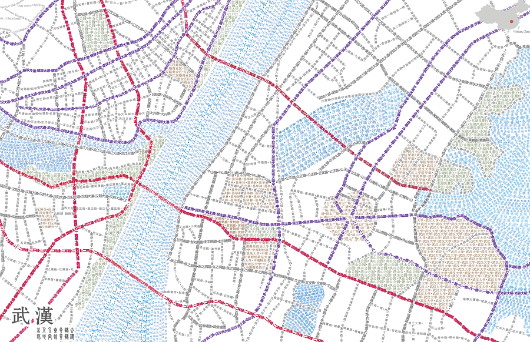

Toggle navigation
Menu
Zihan Song
WORK
ABOUT
BLOG
Typograhic Map of Wuhan, China
It was the best of cities, it was the worst of cities.
Changed from
A Tale of Two Cities

This is a typographic map of Wuhan, China. The map is made solely with type and the idea is inspired by the typographic maps made by the axismaps company. One of the designers Dr. Sheesley really gave me a bunch of useful advice. I used Chinese to make this map for two purposes: first, I want to test if non-alphabetic characters could achieve the same goal: from a distance it can appear as an accurate reference map, and as getting closer you can notice the thousands of words it comprises. I think the effects are quite good. Second, for memorializing this cool city where I finished my undergraduate study.